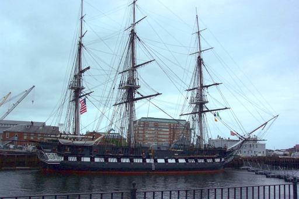
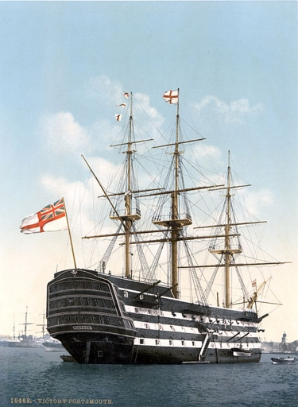

Ship Types
There are many different types of ships and tactics used during the age of sail era. So I will be mainly covering the ships, tactics and terms used from the mid 18th to early 19th century. However, many of the tactics and terms used during this time period are still in use today.
Ship Rating System
The Ship Rating System is a system at which the mighty British navy used to classify ships by the amount of cannons that are on the ship. Each nation had its own rating system but they were mostly all very similar to each other on how they ranked a ship. For this website I will be using the british rating system. The Rating is as follows.
- 1st rate
- The 1st rate had 100 or more cannons. The first rate was the largest of all the ships with many having a total of 120 and more cannons on their broadside. One of the largest would be the Santísima Trinidad boasting an impressive 144 cannons.
- 2nd rate
- The 2nd rate had between 80-98 cannons.
- 3rd rate
- The 3rd rate had between 64-80 cannons.
- 4th rate
- The 4th rate had between 50-60 cannons.
- 5th rate
- The 5th rate had between 32-48 cannons.
- 6th rate
- The 6th rate had between 20-30 cannons.
- Unrated
- Any warship with less than 20 cannons were deemed Unrated and were classified by their sails design but we wont be getting into that yet.
Furthermore warships could be placed in three different groups by the amount of guns and gundecks on them. The following sections will tell more about each group of warship.
Ship of the Line
The ship of the line is a warship used to fight in a line formation in order to have more cannons able to fire at the enemy with being able to take lots of abuse from cannon fire. This in turn made them huge, slow and cumbersome with in some cases having a crew the size of a small town.Unlike the current battleships of today with turrets the ships of the past had stationary guns that were placed on the sides of the ship including the Bow and Stern(refer to the Ship Terms section at the bottom).
For a ship to be called a Ship of the Line (SoL) it needed enough guns to properly fight in a line (we will get more into that in ship roles and naval tactics). For the most part, if a ship had 50 or more cannons and three gundecks it would be considered a SoL. So if a ship is deemed a 4th to 1st rate, it is very likely considered a SoL.
Frigates
When you think of the age of sail era and pirate ships you are most likely thinking or visioning the Frigate. The Frigate is a very powerful ship, yet fast and nimble enough to not need any protection like the SoLs did. They mainly had two gundecks with between 20 and 50 cannons. They would be the 6th to 4th rate. However, many people call frigates that are 4th rates a super frigate like the USS Constitution.
Unrated
Unrated ships were anything that had less than 20 guns. However there are many different types and styles of ships that made up the Unrated section. Here is a few of the many types of ships used.
- Sloop
- Sloop of War
- Brig
- Cutter
- Schooner
- Xebec
Famous Ships
USS Constitution
 The USS Constitution is the oldest naval warship still in active service and able to sail by its own power. The uss constitution were one of six ships that congress approved in order to have ships to protect itself from the mightiest navy at the time, Great Britian, right before the war of 1812. The ship was soon nicknamed Old Ironsides because of the thick live oak boards that made it hard for small calibre cannons to penetrate her side. She was a 44 gun frigate when it first launched but overtime it was refitted to have 52 cannons which makes her a 4th rate in the British rating system. You are still able to see the ship in person and even walk on it, It is in drydock at the USS Constitution museum in Boston Massachusetts.
Here is a link to the museums website where you can find more about the exploits and information surrounding the USS Constitution. USS Constitution
HMS Victory
The HMS Victory is the most famous age of sail naval warship of the british empire. It also was the flagship (The main ship that the heighest ranked commander commands from) of Vice Admiral Horatio Nelson during the battle of Trafalgar in which the british gave a fierce blow to both the Spanish and French empire by capturing and destroying the majority of their SoLs. Sadly Nelson also lost his life during that battle. Like the USS Constitution, the HMS Victory is still around and you are able to see it in Portsmouth, England.
Here is a link to the HMS Victory's website where you can find more about the exploits and information surrounding the HMS Victory. HMS Victory
| Ship Specification | |||||
|---|---|---|---|---|---|
| Ship Name | Ship Rate | Number of Cannons | Crew | Length | Nation |
| Santísima Trinidad | 1st | 144 | 1100 | 201ft | Spain |
| HMS Victory | 1st | 104 | 850 | 186ft | Britian |
| USS Constitution | 4th | 52 | 500 | 175ft | America |
| Belle Poule | 5th | 32 | 260 | 141ft | France |
| HMS Surprise | 5th | 36 | 220 | 129ft | Britian |
Ship Terms
- Bow
- Refers to the front of the ship.
- Stern
- Refers to the back or rear of the ship.
- Starboard
- Refers to the right side of the ship.
- Port
- Refers to the left side of the ship
- Gundeck
- Refers to a deck for the guns to beable to fire from and reinforced for the weight of the guns.
- Broadside
- Refers to the sides of the ship with cannons, if you see they fired a broadside it means they shot all the cannons on one side of the ship.
- Mast
- Refers to the long wooden pine beam sticking out of the ship towards the sky with the sails on them.